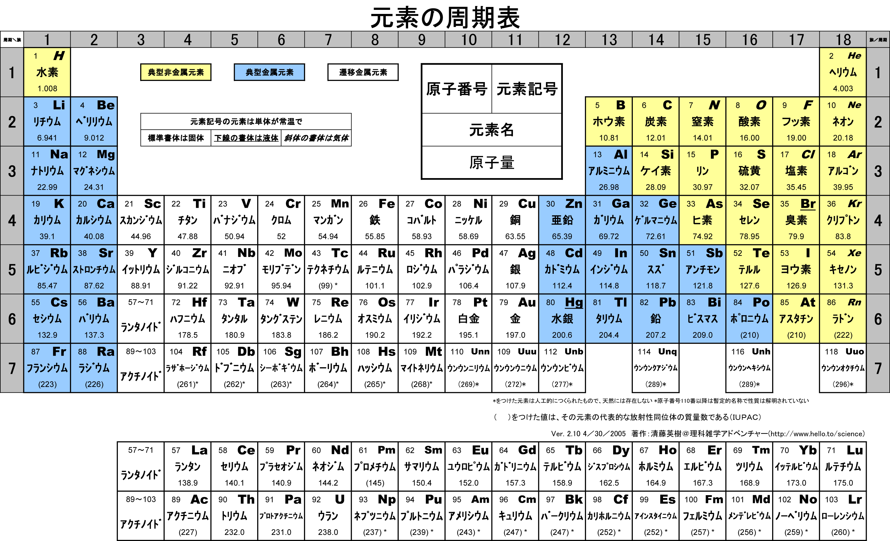

僕の日本語学びガイド、初心者へ 〜 给初学者的日语学习指南
始まり
首先，我要吐槽一下现在中国遍地都是日语的现象。
不过没关系的，我下面就要吐槽日本现在遍地都是英语的现象。但是人家日本前几年还是很高级的，遍地都是中文:-D
好吧当我没说，现在日本也是遍地汉字。这真没办法，他们可以试试只用假名，然后就可以无限玩谐音的梗了。
不过看到中文我们很亲切啊，看到一堆假名是最不爽的事了。
好吧这些后面再说，说回来我当时学日语，原因就两个: 看遍地的日语很不爽、看中文字幕或翻译很不爽，并且重点在后面一个，所以我的目标就主要在阅读和听力上，所以现在也完全不会口语或写作。所以我下面讲的可能会有些片面，不太会关注想要学口语或写作的人。
另外，我是纯自学，网上的视频课什么的都没看过，就是先看看教材，然后硬看原版书和番剧之类的，或者直接去逛日本的网站熟悉网络用语，这样最快了，相信我。
好吧。反正第一步是有充足的动力和时间，然后买教材。我买的是那本烂大街的「中日交流標準日本語」，中级的两册带你领略一部长篇连载爱情故事(所以说日本的风格啊… 看个教材都猝不及防)。不扯淡了，我觉得这本书讲的实在有点烂，语法点零零碎碎的。别的教材我没看过，不予评价，但我建议还是不要看这本教材入门，不然你的语法会一团混乱。(注: 我刚看了看新编日语，感觉语法和其它好多细节，讲得都好一些，但还是不尽人意，而且阅读量有点小。)
スタート
我假设你现在刚拿到你的教材。
第一步永远是背五十音图。(不要看它叫五十音图，其实只有 46 个，是不是顿觉轻松一些(滚))
我两天之内，抽自习课时间把平假名硬背下来了。首先，片假名可以先不背，但平假名一定要背，不然没法学了。平假名看到字能较快地联想读音，就差不多了，这真没那么难。
如果书上没有讲故事的话，我来解释一下日语里的汉字和假名分别是怎么回事。
在很久很久以前，日本的小岛上生活着一群无忧无虑的土著居民，他们说着当地的方言，也没有文字。
然后有一天，来自一个遥远神秘的国度的航船驶来。日本人突然发现，原来世界上有文字的存在。于是他们给自己的每个词语，都根据意思配上了一个汉字，于是说的话可以完美地转为汉字，只是中国人也看不懂罢了。由于汉字实在太难学，古时候就连中国也多数是文盲，所以日本也差不多。
这种汉字在现在叫“训读”，就是写作汉字，但读日本的本地话，汉字只用来表意，不用来表音。一个字对应的其实是一个词语，一个完整的意思，所以通常不止一个音。因为这些都是日本当地的日常用语，所以都是生活中简单的词语，
渐渐地，他们发现自己的词汇实在太贫乏了。有许多在中国的留学生或官员，学了好多汉语，但找不到对应的日语词。他们一怒之下，开始在日文中直接夹杂中文。好吧不是一怒之下，应该是对中国怀着崇拜之心。就跟现在说中文的时候夹个英语一样，其实本来是很不和谐的。总之这些词语写成汉字，也读做汉语的音，反正就是跟汉语一模一样，硬生生塞到日语里面的。最一开始传到日本的是吴音，这个在日语里占的比例挺高的，所以日语听起来，有时候会很像吴地的方言(比如宁波话)，不是你听错了，说的就是中文的方言。后来又传过去汉音、唐宋音，我也搞不懂是什么玩意，反正就是总共三套读音的系统。所以你明白了什么呢？
日语现在的一个汉字可以有 4 种以上(训读可以不止一个)的读音。本地的“训读”，还有直接把中文拿过去的统称为“音读”，放在不同的词里面，读作不同的音，到底怎么读，要看这个词是什么时候传到日本去的。这种混乱程度可见一斑。所以说，你要是背英语单词感觉很无厘头，感觉痛不欲生，我觉得很正常，因为英语其实就是和日语一样的混合语言，而且也许比日语还混乱一个等级。所以你一会儿在背英语本地的拼音，一会儿在背法语，一会儿在背拉丁语，一会儿在背德语，一会儿在背它们的词根混合拼在一起的单词……
所以不纯正的语言就是让人很头疼。不是我说，我真的愿意在学英语之前，先去学学拉丁语。
方法论1: 日语里面，因为训读是简单的词，后来引进的音读是比较高端的词，所以如果看到生字(当然对中文来说是已经认识的字:)，大概可以用这个方法来猜它读的是什么。
我看的教材上关于这些啥都没写，所有的这些方法都是我自己总结的~~~
现在穿插假名的由来。
在训读和音读都已经传入日本之后，我也不知道是什么时间，日本的民间老百姓也想学写字。可惜的是，汉字真的太难学。真的学不来。于是人们想，我不一定要用汉字表意啊，我能把我说话的读音记下来，就万事大吉了啊。我不如自己发明一套拼音。
我感觉他们真聪明。这岂不是可以用来默写作弊？
总之伟大的民间智慧就诞生出了一套拼音。有平假名和片假名。它们出现也有先后，是互不相关的，你可以自己去网上查，我不太了解。但要知道，假名自始至终是拼音。
后来经过历史的车轮碾压，平假名变成了“平”常用的假名 (这样记住怎么区分这两种假名了吧)，片假名的地位跟英文中的大写字母一样了。直到英语统治世界，片假名担负起了音译外来词的重任。
我讲的科学一点。平假名、片假名都是 46 个。都有一张表，叫五十音图。你翻开教材，第一页肯定就是。一列上是: a,i,u,e,o 五个韵母，一行上是: 无,k,s,t,n,h,m,y,r,w 等声母。(我这是用中文拼音的方式讲。)表格对过去一个字一个读音。有些字的读音有变化，请仔细看教材和听力内容。其它的什么浊音(就是 k=>g,t=>d 这类)、长音，还有四个迷你版假名 ゃ,ゅ,ょ,っ 见教材。
这就是所有你不认识的日文字了。就这么几个你还背不下来？就把这两张表背完，你就可以装作自己懂日语了(至少所有的字都认识了:)。
现在先不管片假名。日语里那些不认识的字几乎都是平假名。你会发现它们是汉字的草书演变过来的，笔画都很简单(适合作弊)。既然官方都采用汉字，只有民间用假名，那为什么后来它们混合起来了呢？简单。因为大家都发现了对方的优点。汉语很高雅，但难懂，而且也不能很完美地跟日语对上；假名好学，好写，专门表音，但一长串写起来就像被加密过一样(还真可以当密文)。
方法论2: 所以现在大家都比较随和了，但较偏向于假名。日语现在属于表音文字。所有的汉字都可以写成假名(不管是训读还是音读)，但有些日语本地的词语没有对应的汉字，只能用假名写。汉字纯粹是为了让文章表意更清晰的存在。因此，就算你的目的只是看书，也一定要记汉字的读音，因为说不定这本书的作者喜欢用汉字，那本书的作者就喜欢用假名。
方法论3: 反之同理。你也许一直只记某个词的假名，然后看见别的书上用汉字，你就不认识了。所以每个词，特别是教材上只告诉你假名的词，都一定要到字典上去查。从背第一个词开始就要学会用字典。
举几个例子。(现在我的教材不再身边，希望我没记错。)
第一篇课文，大概会讲 你我他 这些人称和一些简单名词。比如，“我”，「わたし」，我的教材上只给了这样一个平假名。但你去字典上查，就会查出来它其实有个汉字「私」，就是说「わたし」和「私」是完全等价的，你爱用哪个用哪个，现在书上用「私」的好像稍微多一点。
还有很重要的事。字典上会告诉你它是训读，也就是日语的本地读法。然后你用笔画检字法查到「私」这个字，它还有一个音读是「し」，(现在字典也不在身边，不记得还有没有其它音读了)，然后还有其它的训读，比如「わたくし」「あたし」。训读每个字都有明确的意思，但音读一般需要组词。你如果以后看到「私」和其它的汉字组词，一般都是音读，甚至「私的(してき)」这种词，初学的时候可能会认为用训读，其实两个字也都是音读(这词现在先不用记，我就举个例子而已)。
(日语里的「的(てき)」作为音读的时候，大约表示一种具有…的性质的意思，比如「代表的(だいひょうてき)」意思就是“有代表性的”，并不是某人代表的什么东西)
再举个例子。比如「学生(がくせい)」，你可能一点也听不出音读的样子，但它是音读。这样查了字典有什么好处呢？你以后见到「学」，就知道它的音读是「がく」，见到「生」，就知道它的音读是「せい」。你已经记了两个字的音读了。
当然补充一下，也别高兴太早，因为「生」还有其它的音读，比如「一生(いっしょう)」里面「生」读作「しょう」。
(反过来，根据音读联想汉字也同样重要。比如说到「がく」，我就能想到它可能是「学」「額」「楽」之类，说到「せい」我就能想到「生」「精」「成」「星」「性」「正」等等。)
因为教材里还有很多本来是音读，但只告诉你假名的。比如「達(たち)」，表示复数的那个词，我的教材就是一直写平假名，我一直不知道原来它是音读，一直不知道原来「友達(ともだち)」的「達」就是这个词。
上面的这些情况，在我这本教材里出现极其频繁。我不知道别的教材怎么样，词汇表里会不会写出这些，写出来最好，不然我就建议勤查字典。学起来会事半功倍的。我在看了上册之后，才意识到了这一点，赶紧买了本字典来。
关于词语的联想，我还远远没说完，在后面会更详细地讲这个内容。这里先不多说了。
在学了一定程度以后，就可以看字典上的例句了，比教材里的例句靠谱得多。怎么查字典之后就不讲了。
好了，现在再回到读音上，我知道你一定想问，为什么一个字的音读可能是两个音。你见识一下日式英语，你会大开眼界的。
举个例子。英语里进行时的“ing”这个词尾，你猜日语怎么音译的？
答案是「イング(いんぐ)」。看出来了吗，“g”这个音居然被音译进去了… 再看一下“L”这个字母的发音，它音译为「エル(える)」。好了你该明白了，你可以先自己震撼一会儿… 还有，要学日语的话，日式英语是一定要学的，原因嘛… 我还是后面再吐槽吧…
所以我推理一下，可能传到日本的那些中文方言的注音，就有一些这种词尾的音。它们本身并不发音，但是日本人直接硬生生地把它们译进去了。所以好多音读后面都带着「く、ち、つ、き」这些音 (这时都类似于中文的轻声)，特别是「つ」这个音，跟促音「っ」有密切联系，我怀疑日本人就是把中文里，类似促音的这些音直接读出来了…
当然这只是我自己的猜测，但我觉得可信度比较高。只是这个结论让我有些无语~~
不知道还有没有读音上的问题，我会补充在这里。下面自己读教材应该就没太大问题了。
コンティニュー
我上面一直在讲单词的由来，但是需要重点提醒的是，不管学什么语言，
方法论4: 掌握语法最重要！单词永远让位给语法。
方法论5: 语法不要死记硬背，要读出语感。特别是日语这种，能读出很强的语感的语言，也就是语法有点混乱的语言。
我的建议，也是我初学时的做法是，我先按顺序看了看前两三课，把最最基本的单词背一背，然后不管单词，直接往后翻，课文看不懂就硬读，单词不认识的实在太多就翻词汇表。
重点是先看每一课的语法讲解。教材里所有汉字都附着注音，所以可以读得很流畅，即使你一个字都不认识。先做到能看懂语法讲解中，每个句子的语法结构。
接着举例子，比如第一课，肯定就是个判断句式
… は … です
(这里的省略号一般读作「何(なに)」或者「何々(なになに)」)
但是我看到后面的语法之后，知道了，原来这是敬体的形式，至于为什么上来要先教敬语，我不知道(别的教材也是这样的吗？)，但我知道我主要想学的肯定是简体，因为番剧里说话简体居多，小孩从小学说话，学的肯定也是简体。敬体只不过是简体的一种变形罢了。
所以，对着第20多课讲的简体形式，直接把课文转简体。
… は … だ，其中「だ」可以省略
因此，
方法论6: 把语法全部翻遍以后，根据自己的需求灵活变通。
然后我发现，这句式很像文言文诶。
… 者 … 也
这个“也”字表达的是一种强烈的判断语气，省略“也”字，就是比较普通的陈述句。类比一下日语，是一样的。
不过也没那么多能这样类比的语法。特别是日语里，动词是放在最后的，跟中、英语都不同，所以根本上来说，很多句式结构就不一样。这也是为什么日本人听人说话的时候，显得特别文明有耐心，因为整个句子里最重要的东西，动词，居然是放在最后面的，前面啰嗦一大堆，我都不知道这个人对这个东西干了什么？！
名词的语法简单，主要是后面讲到动词的时候，我的教材居然自己发明术语，而且在词汇表里给的是动词的「連用形」，就是跟着「ます」的形式，不给动词原型。要是我没有先把语法浏览一遍，直接跟着背，背到后面发现，什么？我背的一直是动词的敬语的变形？你还跟我讲动词的其它变形？然后告诉我动词的简体形？我估计要疯了。我不知道为什么很多人说这本教材好。
所以我一开始背的就是动词原型，对话都自己翻译成简体。我一开始就自己总结了类似这样的东西:
动词原型: ある 否定: ない 敬体: あります 敬体否定: ありません 表判断: だ 否定: ではない 敬体: です 敬体否定: ではありません
所以你看的出来它们之间的关联。你就知道表示否定判断的 「ではありません」是怎么来的了。「で」有一种“这种情况”的语感，和「は」连起来有一种“这样的话，…”的语感，而「ありません」就是「ない」的敬体，「ある」有一种“存在”的语感，「ない」有一种“不存在”的语感。连起来就是“这是不存在的”:p
再比如一些寒暄语，如「こんにちは」，它其实是「今日は」，两个字为音读。「すみません」就是「すまない」的敬体，是「済む」的否定形式，而「済む」是轻微的意思。
当时这些单词我还没背，我就能一眼看出来它是什么变形而来的。我读课文的时候，读一遍书上的敬体形式，然后自己读一遍简体形式，或者自己把各种变形都用上去。
除了动词变形最疯狂以外，形容词、形容动词和副词之间的变形，还有各种形式的对句子的词性变化(其实就是类似英语里的从句)，这些主要是靠那几个魔幻的助词。
前面讲的这个是语法方面最重要的！你要学会明白一个语法为什么是这样，而不是一直死记语法。除了动词变形非记不可之外，其它的语法如果暂时理解不了，就直接跳过，课文里看到分析不出的语法，也直接跳过，可以在本子上记录一下。等到学了更多的东西之后，再返回来看，所有的语法什么的都是显然的东西。
比如学到形容词，书上会讲如何比较两个东西，我一开始一直没懂 「…のほうが…」究竟是个什么鬼语法，然后，有一天我灵感突现，我细细分析了一下这个东西，我猜「の」就是“的”的意思，「が」就应该是那个表示主语的助词，那么「ほう」是啥？我去字典里翻了好久，然后锁定目标: 「方」，是个音读。我现在也不能肯定是这样，但至少这样就很好理解，跟其它东西相比，…“的”这一“方”更…
这就一点难度也没有了，根本不用背就记住了。
还有讲到后面也是一样，「…のように」其实是「…の様に」，因为「に」就是表示一种状态，所以翻译就是“按”…“的”“样子”，所以就是“像…一样”。「様」也是音读。
「…そう」我理解为「…想」，就是想到这个东西，好像是…
「…のせい」其实是「…の所為」
再比如「なければならない」这个词，就是「ない」变形成 「なければ」，「なる」变形成「ならない」。”如果不这样” “是不行的”
再比如「かもしれない」，就是「か」「も」「知る(しる)」=>「知れる」=>「知れない」。“是不是这样？” “也” “不知道”
「…に なる」「…を する」的区别就是，一个是“变成”，一个是“做成”，就是某人自己去做，然后使这个东西成为…
还有那些「の」「こと」把句子名词化的，我折腾的是最久的。但自己多琢磨一下，语法不过就像层窗户纸，没搞懂的时候，什么都看不见，有一天突然明白了，一捅就破，然后奇怪自己当时是怎么想的。
上面的例子都是我自己研究出来的。这种例子实在太多了，几乎所有类似这样的句式，都可以这样拆开理解。所以我这里就是抛砖引玉一下。你们可以作为参考。我的建议就是，永远不要死记任何一条语法。
把书里的语法都大致过了一遍之后，你的内功就足够深厚了，然后再把书再翻回第一篇课文，开始重读课文和背单词的旅程。
アゲイン
整本书通读一遍之后，现在自学已经没有什么难关了。接下来要讲的就是背单词。
一部分内容已经前面讲过了，把一个字的音读、训读搞清楚。
针对看《标准日本语》的人，还有话要说。不管你最后的目的是什么，背动词一定要背原型，词汇表里给的是连用形，你都要自己转换成原型再背，如何转换要到很后面的语法解释里面找，但相信我，听我的话。你背了原型，将来想要礼貌起来，还可以学，要是背了连用形，将来就不会说话了…
还有许多书的词汇表(包括字典)里，形容动词的词尾是不带「だ」的，但我觉得带着「だ」一块儿背比较好，不然会搞不清它的词性，可能会跟名词或副词搞混。不光是把形容动词搞混成其它词性，而是互相全部搞混。
还有，背动词的时候也一定要背它是哪种活用类型。最好的办法是，先把动词的几种活用搞清楚，否定形式和过去式不用说了，「て」「た」结尾的那种(不记得术语了)，还有命令的形式、规劝的形式、可能的形式、假设的形式、被动、使动(都忘了术语了)的变形方法尽可能多地记住，然后从第一课开始，每看到一个动词，就开始各种变形练习。
当然形容词也可以这样练习各种变形，当然我一开始记不住这么多，就根据自己情况，只记了个原型和否定、过去式，和敬体，其实是最基本的了，但学到后来还是轻松不少^~
(顺便提一下，日语里的过去式，其实有点类似英语里的“完成时态”，而不是英语里的“过去时”，所以不要跟英语类比。但是它跟中文很接近，过去式就几乎等价于中文的“了”，比如「分かった(わかった)」就是 “知道了”，「よかった」就是“太好了”。基本跟中文的“了”一模一样，其实表示的是完成时态。知道这个对理解时态的问题挺有帮助的)
(再说一下语法的东西吧。中文的“做了某事”可以翻译为过去式，中文的“做 过 某事”其实是翻译成“有这个事”，就是「なに を する ことがある」，其实这才是单纯的过去时态，应该好理解了吧)
以上是背单词之前的准备工作。
背单词也要有选择，比如数字、日期时间这些东西，背它干嘛，直接跳过不理，遇见了就直接念中文。你觉得你一辈子都说不到的词语，直接略过。
接下来说说一些小窍门。
首先如果是汉字，别忘了它是古时候传到日本去的，所以你要学好文言文。比如「走る(はしる)」是跑的意思，「行く(いく)」才是走的意思。「顔色(がおいろ)」是脸色的意思。「仮名(かな)」假名，就是“借”来的“名”。诸如此类。这个就看你自己了。不过书上肯定也会详细讲的。
日本人还喜欢把数学等专业的词语引申到日常中，比如常见的词，「最大公約数(さいだいこうやくすう)」，「単細胞(たんさいぼう)」意思都能猜到的吧。
然后，查字典就不多说了，如果它是个训读，那么很大程度上要死记硬背，背的时候多想想它的各种变形。除此之外，有个地方要靠自己的感觉:
方法论几了来着？: 找单词之间的规律。
训读的单词，很多都是有一个词根一样的东西的，会变的部分跟在后面，写成假名。这就是为什么很多日语单词是一个汉字跟若干个平假名。而同一个词根，很多时候会构成不同的词。我不知道怎么表达，直接看例子。我随便想一个
友達(ともだち) 共に(ともに) 伴う(ともなう) 灯す(ともす)
意思分别为朋友、(和…)一起、一起(做某事)、点灯。虽然汉字都不同，但不觉得它们的意思很有关联吗？
如果在第一次背了「友達(ともだち)」之后，就对「とも」这个音有了语感，那之后背起来就轻松多了，包括「灯す(ともす)」有把大家都一起照亮的感觉。
其实「とも」这个音的语感是怎么来的呢，「と」就是“一起”的意思，「も」就是“也”的意思。现在这些都在我的脑子里关联起来了。虽然在使用日语的时候，不会明显感受到这种把音都拆开的感觉，但它确实已经是语感的一部分了。
在还没有形成这种语感之前，要记住，多找规律，多联想，当然主要还是死记硬背，我个人为了语感好一些，喜欢带着句子背，一般是字典里的例句(日语字典里的例句有些很好玩的，不像中文字典那么死板)
联想也不光是词根，有很多动词，和少数的名词是复合而成的，看到三四个音的词就可以往这块想
断る(ことわる) = 事(こと) + 割る(わる) 微笑む(ほほえむ) = 頬(ほほ) + 笑む(えむ) 遡る(さかのぼる) = 坂(さか) + 上る(のぼる) 雷(かみなり) = 神(かみ) + 鳴り(なり) 掌(てのひら) = 手(て) + の + ひら 狼(おおかみ) = 大(おお) + 神(かみ) <= 新梗来源:p 蛤(はまぐり) = 浜(はま) + 栗(くり) <= ...
这些读多了就明白了。之后看到新词也能联想到它是怎么组合的。
这些词还是比较直接的，有很多副词就不那么直接，要看一定的语感了。比如「ふわりと」，我没见过这个词，我也猜得出来，因为「ふる」有「降る」或「振る」的写法，「ふわふわ」是一种轻飘飘的感觉，「り」又是一种直接下来的感觉。「と」就是接在词尾的，有一种转眼发现新世界的感觉(这该让我怎么描述)，或者陪伴着什么的感觉。然后感觉出来它的意思了？
(顺便一提，「振る(ふる)」的语感大约是，物体的运动状态突然变化… 所以根据概率论(好了我又开始扯淡了)，它会在原地振来振去。比如「振り返る(ふりかえる)」就是回头的意思，因为你头的运动状态突然变了。它的语感真的是这样的…教材上不会告诉你这些…)
再比如「いきなり」，我猜测是「生きる」和「なる」的组合，就是“变得活了一样”，所以就大约是“突然”的意思。
日语里还有比较恐怖的一类词，就是拟声/拟态词。这在日语里使用频率之高，简直让人怀疑日本人是不是都是音乐天才。学到了才知道。
训读就到此结束了。
接下来，如果碰到的是音读，而不是训读，你可以松一口气，你要学的不过是中文方言而已，不要担心，很好学的。
一个小 ヒント: 动词以「する」或「じる」结尾的，都是音读，形容动词都是音读(应该是的吧…)
比如教材上总是写「きれいだ」，它其实是「綺麗だ」的音读罢了，查个字典就记住了。同样的还有很多很多，主要是形容动词和副词，「おおぜいだ」=「大勢だ」、「いっぱいだ」=「一杯だ」、「いっしょだ」=「一緒だ」……举都举不完。要点还是，勤翻字典。
突然想到一个不那么直接的，补充一下，「わがままだ」大约是「我 が まま」，就是“我 就 这样”，所以是“任性”的意思。所以说这些也是凭语感的，要自己多找感觉。
音读，重点就不在死记硬背，重点在于读出方言的感觉。我有段时间想多训练一下音读，就直接找篇中文文章来，照着日语的音读来读，遇见不认识的字(而且是日语里常见的)就翻字典，然后读多了就读出感觉了。毕竟是方言。
好像到方法论8了吧: 见到不认识的词，特别是猜测是音读的词，先猜读音，然后翻字典对照，你会猜得越来越准，甚至看番听到不认识的词的音读，就能反应过来是什么词。
音读的词建议不要花时间去背，我根本没背过，就是靠猜，然后越猜越准，慢慢地你什么都没背过也会了。当然如果是中文里没有的词语，还是要单独背一下的。
也有许多词是音读训读混合的，就是两个字的词语，其中一个字是音读，一个字是训读。这些记起来可能更麻烦，我也没找到什么好方法，很无奈，一开始只能死记。但背得多了，也会发现很多规律，有些字放在这个位置就用训读，放在那个位置就用音读，有些字不管怎么组词，都一直用训读或音读，总之这慢慢会变成一定的语感。
接下来是诡异的东西，外来语(音译词)，就会遇见让人痛苦的片假名。
片假名可以慢慢背，跟着单词一起背。毕竟不是重点。
现在日本人越来越喜欢说英语，到处都是泛滥成灾的音译词，而且有些说起来违和感爆棚。片假名也是多读，然后就找到它的规律了。然后你就学会日式英语了…
我刻意为了让你见识一下片假名，所以我前面几个小节的标题，用的都是片假名。你可以回头看一看。这种情况在日本很常见…
以前你到日本，如果不会日语，寸步难行，会中文也没什么用。现在会中文更没用了，而且不会英语，也差不多寸步难行… 好多日本人都放弃汉字，转而投靠英语了，因为汉字真的太难学了…
但是我坚信汉字不会消失的，因为有 niconico 的存在！日本人在弹幕里几乎不会发片假名的，因为看不清(\哭)……
不信你试试。
这就是为什么世界上只有中国和日本有弹幕视频网站，其它的国家的网站也能发弹幕，但所有人看视频的时候都是关弹幕的，你可以去 Youtube 上看看。你就知道为什么了。
因为实在看不清。
作为世界上唯一的表意文字(这是真的)，汉字还是有它的个性的。但很无奈，你要学日语，还是要学好英语…
無茶苦茶だ
看，这节的标题是我口头禅。
说到这个词，我突然想起来日语里还有一类词语，不过非常罕见。这些词本来是日语的本地话，但是没有根据意思给它配上一个汉字，于是它就孤单地混在平假名里面，比如这节的标题「むちゃくちゃ」，然后人们觉得它这样写起来太难看了，有点可怜它，就按照汉字的读音，给它配了几个汉字。这里的汉字是只表音，不表意的。这种词比较神奇。
当然日语里面最神奇的词，我觉得一定是「可愛い(かわいい)」，为什么呢，它是日语本地的词，但它的读音跟「可愛」的音读一模一样，于是它是我印象里唯一的中日读音和意思都通用的词。(不过把这个词拆开，似乎原意是“皮 好”???)
而且日本人特别爱用这个词。任何小小的东西，或萌萌的东西，或者只是主观上觉得很好的东西，庞然大物也行，都能用这个词来形容。褒义词只要会这一个就够了，走遍日本没有问题… (如果你是男生的话，最多可能会有点奇怪)
重点已经都讲完了，这里就是些杂项内容。
首先，课本不要死磕，大概就是泛读一下就可以过了，不要听别人说什么 “要打牢基础”，基础的东西就是语法，语法不是死记就能记住的，多读才是重点。一本书学个六七成就赶紧进阶下一本，然后大概看个两三本课本就可以尝试原版书了。
原版书的话，如果你喜欢某个专业，你可以试着买专业书，比如历史书，里面全是汉字，既读起来顺畅，还能帮助你巩固语法，学习许多许多汉字的音读。当然看数学物理书也可以。注意，千万别看化学书，想学化学的同学注意，如果你看了下面这些片假名，还想去日本留学读化学的话，我没话可说。

再来个我知道的例子。
氢氧化钠:「水酸化ナトリウム」<= 为什么氢氧根叫“水酸”???
有机化学更夸张，你见不到一个中文字，不信你看看家里有没有日本的眼药水、化妆品或者零食的配料表。
お前たちは、ツー ヤング ツー シープル ソムタイムス ナイーヴ だ
这是条长长的分割线。我估计有人都反感这些了，就当我前面什么也没干过好了。
然后假设你已经买了本书，我先跟你打个赌，你一定会看反。
日本的书都是从右往左看的。而且都是竖排排版的。跟中国古代一样。
只有数学物理这类的书除外。因为公式只能横着写，所以它们是横向排版的。
我打赌就算我已经告诉你了，你还是会试图从左往右看，信不信？我这个习惯改了整整一个多月。
看日语书你也会发现一些有趣的地方，就是它的生僻汉字一定有注音。不像中文书，只有给小孩看的才带注音，日语本质上作为一个表音文字，你永远无法料到别人到底认识哪些汉字。你读过就有感觉了。
(另外，日语有一个特有的修辞手法(好像已经是挺正规的修辞手法了)，就是，我写一个汉字词语，但是给它注音用一个其它的词，比如写个「現実(げんじつ)」，然后给它注音「リアル」；「祈り(いのり)」注音成「こえ」，就是「声(こえ)」。这里的两个词意思有相同之处，但是有微妙的区别，给人一种很神秘的感觉。还有的时候，就完全是两个词的双关了，这种就跟上下文有联系了。)
我估计所有人更不习惯的就是，日文没有断句！！！
我不幸地看的第一本日语小说是凉宫(别吐槽…)，翻开书(然后发现不对劲，再换到右边翻开)之后，我直接被第一句话给震慑住了。连着三列的字没有断句！？
日语只有顿号和句号，然而句号很可能一段话就最后面一个，很多地方中文该用句号了，日文用顿号，中文该逗号了，日文啥也没有。
所以说语言都是相通的。如果你文言文断句断得好，你日文读起来也顺手。
我对着书中的第一句话琢磨了很久很久，然后决定先往后看。然后第一章读得我累死累活，从第二章开始，就感觉越来越顺畅。再返回来读第一句话，居然顺着就读下来了。
读原版书永远要过这个坎，我一开始怎么也读不通一些句子，还以为它们是非常高级的语法，我还没学过，后来发现根本不是，要说语法的话，考试有 N3 的水平，就绰绰有余了，读不通就是没语感而已，只要硬着头皮去读就没太大问题。(当然如果生词太多，是另一回事，不过我前面讲了那么多猜的方法，也应该都用进去了)
只要你已经会读课外书了，我的建议就是，不要再一个劲学教材了。看教材入个门就行了，要学高级的东西，就自己再买书看就行，玩原版游戏也行，遇见生词查字典就行，不需要靠教材上面中文式的例句。词汇量大一些后，可以试着看生肉番，之后就随你自己的便了，你已经获得了在二次元中的自由。当然我还没到这个等级。
あとがき
终于写完了啊。希望这篇文章能让你不再挣扎在学日语的路上。
不过，如果你真要去日本，你需要自己再学学现实的东西，比如在现实中，不是随便拉个人都可以叫「お前(おまえ)」或「君(きみ)」的，「でも」也不是随口就能说的。并且日语里「二次元(にじげん)」这个词会让人想到一些Ｈ的东西，不要乱用。
但是你可以仗着自己会很多中文，跟别人装文雅。比如你说天空，你不要说「空(そら)」这个训读，你可以说「天(てん)」这个音读，别人会觉得，你真是个文艺青年(中二病患者)。
说实话，我很不喜欢日本这个国家，因为我现实中感觉到的日本很大程度上是，死板，各种等级制度，性别歧视和其它的各种歧视都还有点严重。其实中国这些也很严重，如果细细观察过的话。中国现在还不学点好的，偏偏要把日本那些死板的东西学过来，而且还学得更烂了。日本的优点当然也有很多很多，但从来没见中国宣传过，中国宣传的日本的优点，我感觉尽是日本最让我讨厌的地方。我是挺想不通为什么的。
所以也不要把日本就想象成二次元世界一样美好，对日本人来说，二次元也是他们的幻想罢了。二次元跟日本是两个世界，只不过它们的共通之处是说日语。
不管你的目的是哪个，学日语也没那么难，把它当成中文方言就好了，它在中文方言里也不算难学的吧，我感觉。
(这首歌够冷门吧。现在已经能算是老番了吧。我怎么就这么怀旧呢。)
要说这篇文章的话，肯定还有好多东西没讲到，我既没那水平，也没时间来写一本日语教材。而且一本教材也没那么重要，只要不要去报课外班并且遇到了个普通的老师，就没什么大问题。要怎么学，最终还是看自己。有时候你突然听出来了字幕里的错误，你会感到一些欣喜，从这时开始，你就可以试试做野生字幕君了，像我从刚开始纠正一些字幕，到现在大概能帮忙补充七八成的字幕 (可以看出来我其实也还是初学者而已)，也就没几个月的时间，学起来真的很快的(不过要从七八成到十成才是最困难的)。
方法论'⑨': 楽しみを持とう！